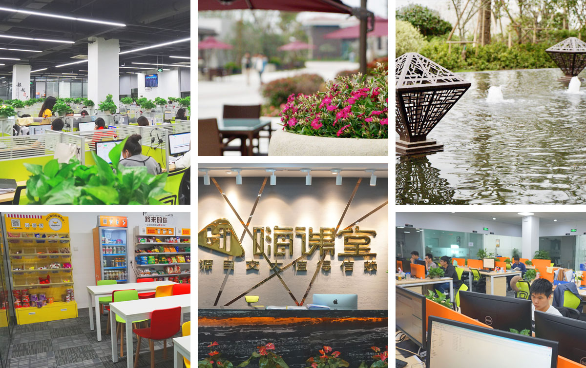

-

-
公司福利
CORPORATE WELFARE
我们是一个有着教育情怀的企业，回归教育本质，用心做教育，做真教育！公司每年提供3-4次的旅游团建活动， 优秀员工额外享受高规格的旅游体验，并可获得管理层为家属寄送的亲笔感谢信和上门拜访！ 公司还会定期为员工准备令人惊喜的节日活动、节日礼品、生日祝福、结婚礼金，以及带薪年假、年度体检等多种福利！ 快点加入我们吧，这里的机会多多。
嗨课堂梦想开始的地方
关于我们
ABOUT US
嗨课堂是一家专注于全国中小学一对一在线辅导的知名教育机构，依托百年交大优势而创立，拥有三十多年中小学教学教研沉淀。凭借优质的师资力量，嗨课堂发展迅速，并受到资本追捧，先后于2017年8月获得头头是道、创新工场和桃李资本共5000万A轮融资，2018年1月获得A+轮6000万融资。随着教育意识的提升和家庭收入的增加，K12教育行业已经进入了高速增长期，市场空间巨大，预计到 2020年，我国K12教育的实际在校人数将达到2.12亿人，市场规模将达到大约7187亿元！嗨课堂作为在线K12教育行业中的一匹黑马，未来有望成为行业独角兽！你已经错过了互联网+金融/房地产等黄金时期，难道还要错过K12教育吗？？！！！
招聘信息
RECRUITMENT INFORMATION
全部 技术部 销售部 教学部 市场部 人事行政部 财务部 质检部 总经办
-
中高级JAVA开发工程师
-
【岗位职责】
1、负责/参与技术架构设计、重构、优化，根据业务规划及技术规划制定应用架构方案；
2、负责/参与项目系统的架构设计和系统设计、详细设计；
3、主导/参与技术难题攻关，持续提升核心系统在高并发、海量请求数下的高处理性能；
4、核心功能的架构与代码模板编写，开发与维护系统公用核心模块；
5、审核和评估相关方案与设计，以确保其符合架构规划，满足业务需求；
6、分析系统瓶颈，解决各种疑难杂症，对系统进行性能调优；
7、通过对团队的培训与指导，提高整个团队的技术水平；
-
【岗位要求】
1、深厚的技术背景，三年以上互联网产品开发工作经验，具有良好的开发习惯，注重编程规范，具有良好的团队合作能力，自学能力和解决问题的能力；
2、精通如：Servlet、Freemarker、Struts、Spring、Spring MVC、MyBatis、Hibernate、memcache、Maven等相关知识中的一种或多种框架（框架提供的特性及其实现原理）；
3、精通Mysql、Redis、Nginx、MVC/REST架构、模板引擎、中间件的原理与应用；
4、具备良好的数据结构和算法功底，熟悉tcp/ip、http等基本网络协议；
5、熟悉互联网开发模式，清晰理解缓存，缓存设计和模式；
6、具备出色的交流沟通能力,出色的协调和解决问题能力,较强的文档撰写能力；
7、优秀的组织规划能力及计划执行能力，认真细致，有责任心，能承受一定的压力；
-
-
班主任
-
【岗位职责】
1、了解学生的学习进展情况并向家长沟通反馈，对所带在读学员提供高水平的服务，促使学员继续购买课时；
2、安排好学生每一次的上课时间，确保课程如期进行；
3、和其它部门保持良好的沟通和协调，完善服务质量；
4、按照课程管理流程对学员在中心的学习进行管理，并与学生家长及时有效沟通，与学生和家长建立长期、稳定、良好的关系。
-
【岗位要求】
1、大专及以上学历；
2、自信、坚韧、目标明确、吃苦耐劳；
3、善于沟通，亲和力强，协调说服力强；
4、热爱教育行业,有良好的客户服务意识；
5、能适应教育类上班时间，偏向于下午晚上和周末上班（交通十分便利）；
-
-
课程顾问
-
【岗位职责】
1.根据公司提供的客户源及已在官网报名的学生家长进行沟通咨询服务，安排合适的试听课；
2.收集学生试听课反馈信息，为其安排个性化课程，推荐符合的课程套餐，最终完成报名；
3.根据公司发展规划，持续完成每月销售指标；
-
【岗位要求】
1. 大专（含）以上学历，营销、管理、心理学等，优先考虑教育行业；
2.热爱教育行业，致力于长期在教育行业发展；
3.亲和力强、沟通流畅、重点突出；
4.个性开朗、反应敏捷，有较强的服务意识和责任心；
5.能够接受教育类行业的灵活上班时间，偏向于下午晚上和周末上班（交通十分便利）；
-
-
学科老师
-
【岗位职责】
1、在线教授本学科课程，为学员提供专业的高质量教学服务；
2、为学生查缺补漏，帮助学员尽快提高成绩；
3、帮助学员提高学习兴趣，养成好的学习方法及习惯；
4、参加集体备课，参加中学生讲座；
5、写好学员评语，总结教学得失；
6、参加学科教研活动，提高教研水平，为公司提供高质量的教学资源；
-
【岗位要求】
1、年龄22－45岁，全日制本科以上学历，师范类或有教学经验者优先；
2、参加过所应聘科目的考试，对其有深入研究，并获得高分；
3、善于与学员沟通，可以根据学员情况对课堂进行及时调整；
4、为人师表，有团队合作精神和组织协调能力，有敬业精神，能吃苦。
-
-
排课教务
-
【岗位职责】
1、负责后台课程顾问提交数据的记录和整理；
2、根据后台提交的数据为学员匹配合适的任课老师；
3、负责任课老师的课时管理和跟进；
4、负责与任课老师，班主任的沟通；
-
【岗位要求】
1、大专极其以上学历，对教育行业感兴趣；
2、熟悉在线教育行业，愿意从事教育行业；
3、良好的沟通表达表达能力；
4、工作认真负责，有排课工作经验的优先考虑；
5、吃苦耐劳，学习能力较强。
-
-
SEO专员
-
【岗位职责】
1、负责企业网站品牌宣传报道、新闻稿件的文字撰写、内容建设（图文采辑）工作；
2、负责企业各宣传报道、新闻稿件在各传播媒介（官网、微信、微博、论坛等）的推送及软文写作；
3、负责企业宣传报道、新闻稿件的内容监制、推广渠道（新媒体）的日常维护及内容更新。
-
【岗位要求】
1、本科极其以上学历，两年以上同岗位工作经验；
2、具有良好的独立撰写、新闻编辑能力，较强的理解能力、洞察力，有创新意识；
3、熟练使用办公软件及编辑类相关软件；
4、有强烈的工作责任心和团队合作精神，能承受较大的工作压力；
5、新闻学、汉语言文学计算机等相关专业及有seo基础、熟悉微信等新媒体且有相关工作经验的优先录取；
-
-
文案策划
-
【岗位职责】
1、公司官方微信公众号的图文创作、发布；
2、公司推广文案的撰写、排版；
3、公众号活动推广文案创作；
4、平面创意文案；
5、新闻稿，产品PR软文，产品包装等；
-
【岗位要求】
1、有情怀，有理念！这是一个讲情怀的时代。在新媒体中，又需要放大这种“情怀”特质。所以，请你是个有情怀、有理念、有想法、有思辨能力的人；
2、敏锐的洞察力，乐观的学习态度。新媒体发展迅猛异常，各种热点、流行稍纵即逝。所以，你必然是一个对热点敏感，洞察力超群的人。同时，对于“学习”这件事，也必然抱着乐此不疲的态度；
3、团队合作与责任心，我们有一个专门负责新媒体运营的团队，团队中每一个人都各司其职，各尽其才，相互配合。在团队中，融入与合作是关键所在，也是我们所珍视的。而责任，贯穿始终。既是对团队、对工作负责，也是对自己、对未来负责；
-
-
新媒体运营专员
-
【岗位职责】
1、负责运营微信公众号，负责公众号日常运营、维护、增粉等工作；
2、一定量的公众号的图文创作、编辑、发布等工作；
3、对公众号的推广模式、推广活动和推广渠道进行探索，并提出相应方案；
4、通过有效运营手段提升用户活跃度,增加粉丝数量；
5、提升粉丝活跃度，不断策划互动活动，包括H5活动、节日活动等；
-
【岗位要求】
1、大专及以上学历，一年以上工作经验，具有新媒体运营或社群运营经验者优先；
2、执行力强，责任心强，工作效率高，优秀应届毕业生亦可；
3、热爱新媒体运营工作，知晓新媒体的巨大价值，有明确的职业发展规划；
4、有团队协作精神，能适应朝气蓬勃的团队氛围；
5、有上进心，追求更高的职业发展；
-
-
行政经理
-
【岗位职责】
1、主导完成公司行政事务工作及部门内部日常事务工作；
2、组织制定行政管理规章制度并督促、检查制度的贯彻执行，并及时提供合理化建议；
3、参与企业文化的建设和实施工作；
4、负责起草行政相关文件、计划、报告等内容；
5、组织、安排公司重要客户来访的接待工作，协调内外工作，树立企业形象；
6、负责公司会议会务工作及其他活动的后勤支持工作；
7、负责公司环境布置的有效管理；
8、负责办公区域卫生管理，指导并督促行政部人员日常管理以及监督工作；
9、负责公司行政、采购事务管理；
10、协助上级进行内务、安全管理，为其他部门提供及时有效的行政服务；
11、协助上级做好集团与旗下公司的沟通协调工作；
12、领导交办的其他事项。
-
【岗位要求】
1、大学本科及以上学历，管理类相关专业毕业；
2、5年以上企业行政管理岗位工作经验，3年以上同岗位管理工作经验；
3、善于协调工作关系，解决复杂问题，责任感强；
4、具有良好的沟通协调能力和管理能力，并具有较强的团队合作和应变能力；
5、良好的计划执行能力和独立工作能力；
6、能够熟练使用办公自动化软件及办公设备，熟悉企业行政管理相关流程及制度；
-
-
招聘专员
-
【岗位职责】
1、负责与各部门对接，及时了解部门招聘需求；
2、负责招聘渠道的管理，职位的发布；
3、负责人才筛选、组织各类面试，完善及优化招聘相关流程；
4、招聘岗位方向： 销售类，IT类，职能类；
5、完成领导临时交给的其他事务性工作；
-
【岗位要求】
1、本科极其以上学历，1年左右的招聘工作经验，熟悉招聘工作流程，具有教育行业经验最佳；
2、具有主动搜索人才、挖掘人才的能力，熟练运用各种招聘工具和手段；
3、能够熟练操作PPT，Excel，World，H5等办公软件；
4、为人正直、认真负责，有较强的沟通协调能力、计划与执行能力；
-
无招聘职位
无招聘职位
无招聘职位
公司环境
CORPORATE ENVIRONMENT
